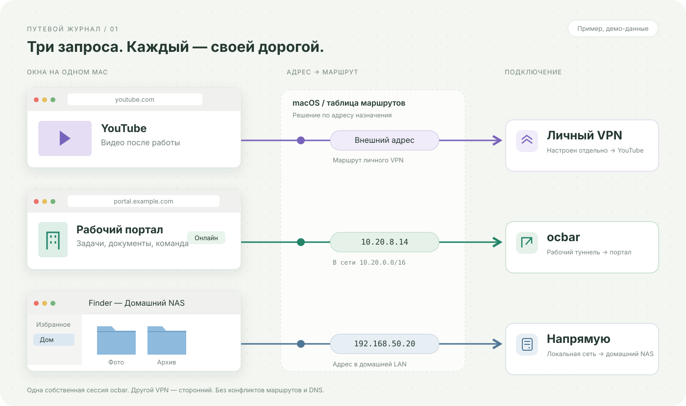

ВАРИАНТ 01
Рабочий стол
Окна, которыми вы пользуетесь каждый день, и три независимых пути между ними.
YouTube через личный VPN. Рабочий портал через ocbar. Папки NAS по локальной сети. Каждый вариант объясняет те же возможности своим визуальным языком.
Готовый сайт: лайм + первый экран 5 + карта 3 ↗
Окна, которыми вы пользуетесь каждый день, и три независимых пути между ними.

Сравнение полного туннеля и выбранных маршрутов в одной визуальной истории.

Mac, личный VPN, рабочая сеть и NAS на одной карте соединений.

От имени сайта к DNS и нужному маршруту. Пошаговая история соединения.

Тёмный журнальный разворот: крупная типографика, светлые окна macOS и открытые исходники.